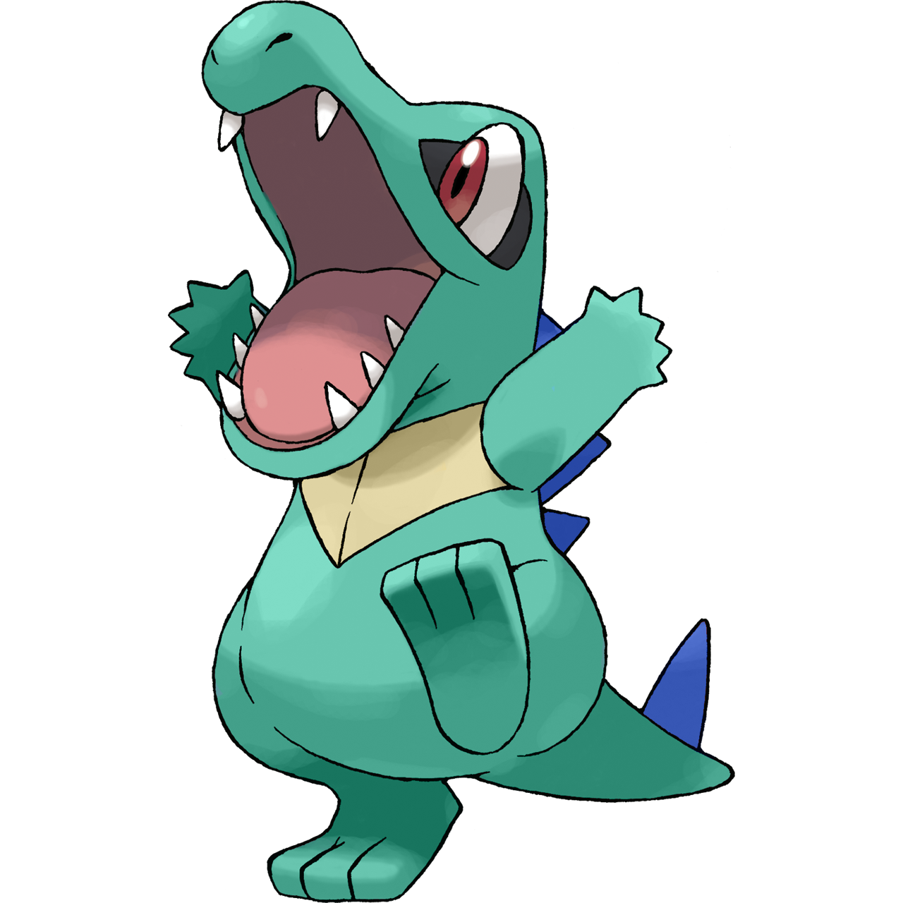
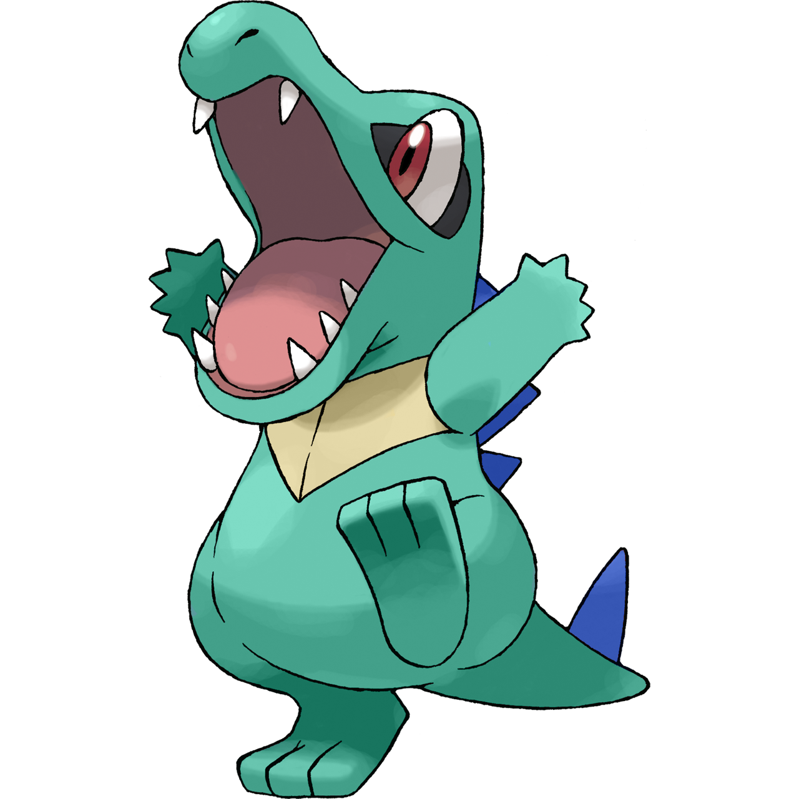

Pokemon Starters by Generation

Bulbasaur is a small, quadruped Pokémon that has blue-green skin with darker patches. It has red eyes with white pupils and pointed, ear-like structures on top of its head. It has short, pointed legs with three sharp claws on the front feet. A yellow flower is on its back, which is reminiscent of a seed. Its tail is thin and covered with a spiky brown-black pattern. It has a bulb on its back that is filled with a plant-based nutrient. The bulb is drained to fuel its signature attack, Solar Beam.


Charmander is a bipedal, reptilian Pokémon. It is primarily orange with a cream underside from its chest to its tail. It has a long snout with a black or dark gray tip, small, round ears with black interiors, and two pointed teeth on each side of its lower jaw. It has small, stubby legs and three sharp claws on the front feet. A flame sac is located at the base of its spine, which it can use to secrete fire from its mouth. The flame sac is drained to fuel its signature attack, Fire Blast.

Squirtle is a small, bipedal, turtle-like Pokémon. It has a short neck and a small, round head with a cream-colored face, two small, round ears, and a short, blunt snout. It has large, dark eyes with a yellow sclera and a dark pupil. It has a short, stubby tail with a cream underside. It has three clawed fingers on each hand and three toes on each foot. It has a brown shell on its back, which it can retract into. Some moves Squirtle can learn are Water Gun and Bubble.

Chikorita is a grass-type Pokémon introduced in Generation II. It has a pale green body with large, rounded ears and a leaf-like curly extension on the top of its head. Chikorita is known for its calm and peaceful nature, but it is also fiercely protective of its trainer and will not hesitate to use its vines to defend them. Its signature move is "Razor Leaf," which involves firing sharp-edged leaves at its opponents. In its final evolution, Chikorita becomes the powerful Meganium, known for its gentle healing abilities and strength in battle.

Cyndaquil is a quadrupedal Fire-type Pokemon with a fiery back, tan fur, and black stripes. It is a timid creature that can unleash a powerful jet of flame from its back when threatened, making it a formidable opponent in battle. It is also known for its quick speed and agility, making it a popular choice for trainers looking for a nimble fighter. With its adorable appearance and fiery spirit, Cyndaquil is a favorite among Pokemon fans.
 

Totodile is a blue and yellow quadruped Pokemon that resembles a bipedal alligator. It has a large, powerful jaw filled with sharp teeth, a rounded snout, and a red crest on its head. Totodile is a water type Pokemon, capable of using powerful water attacks and has a playful personality, making it a popular choice for trainers. Despite its small size, Totodile is known for its strength and determination in battles, making it a formidable opponent for other Pokemon.

Treecko is a grass-type Pokémon with a small, lizard-like appearance. It has a green body with brown markings, a long tail, and large, round eyes. Treecko is known for its quick and agile movements, and has the ability to stick to walls and climb trees with ease. It evolves into Grovyle and then into Sceptile, and is a popular choice for trainers due to its versatility in battles.

Torchic is a Fire-type Pokemon species introduced in Generation III of the Pokemon franchise. It is a small, orange, bird-like creature with a round head, wide eyes, and three spiky feathers on its head. It has a fluffy, yellow belly and two legs with three toes each. Torchic has a flame on its tail, which it can use to ignite its opponent or warm itself during cold nights. As it evolves, it transforms into Combusken and finally into Blaziken, becoming one of the most powerful Fire-type Pokemon. With its impressive speed, powerful moves, and high special defense, Torchic is a force to be reckoned with in battles.

Mudkip is a quadrupedal, amphibious Pokemon that is primarily blue with a light brown underbelly. It has large, triangular ears that are often seen standing straight up, a wide mouth, and a fin on its forehead that resembles a Mohawk. It has the ability to generate powerful jets of water from its mouth, making it a formidable opponent in battles. Its sturdy legs and tough skin make it well-suited for life in marshy environments, and its ability to sense vibrations in the ground allows it to detect incoming threats. Overall, Mudkip is a strong and resilient Pokemon that is a popular choice for trainers looking for a versatile and reliable partner in battles.

Turtwig is a grass type Pokemon with a round and sturdy body covered in a brown shell. It has green leaves on its head that act as a source of photosynthesis, and its arms and legs are also covered in tough brown shells. Turtwig is a hardy Pokemon that is able to withstand various attacks with its shell, and it can also attack by whipping its enemies with its vines or using powerful grass moves. With its adorable appearance and tough exterior, Turtwig is a favorite among Pokemon trainers and fans alike.

Chimchar is a Fire type Pokémon that resembles a small, flame-tailed monkey. It has a dark red body with yellow, flame-like markings on its cheeks, arms, and legs. Its long, pointed ears, black fur, and fluffy tail give it a cute and playful appearance, but don't let that fool you - Chimchar is a fierce fighter, relying on its speed and agility to battle. With its powerful Fire type moves and its ability to Mega Evolve into Mega Infernape, Chimchar is a formidable force on any team.

Piplup is a Water-type Pokemon that resembles a penguin. It has a blue head and torso, white underbelly, and short wings that it uses to swim through water. Its blue and white head feathers form a crest that it uses to show its emotions and it has a small, round beak. Piplup is a proud and determined Pokemon that often shows arrogance, but it has a strong sense of loyalty to its trainer. Its signature move is Bubble Beam, where it shoots a stream of bubbles that can damage its opponent.

Snivy is a serpentine, grass type Pokemon known for its slender, vine-like body and gentle disposition. It has bright green skin with a yellow underbelly and a hood-like leaf on its head. Snivy is a powerful and graceful Pokemon, with an ability to photosynthesize and heal itself through sunlight. Despite its peaceful nature, Snivy is a formidable opponent in battle, able to use its vines to whip and strangle its enemies. With its combination of speed and power, Snivy is a popular choice among Pokemon trainers.

Tepig is a fire-type Pokémon with a round and chubby body, short legs and a long snout. Its body is primarily red in color with yellow markings on its feet, tail and cheeks. Tepig has black, curly eyebrows and small, round ears. Its primary element is fire, which it can unleash from its snout in the form of flames. Tepig is known for its energetic and determined personality, making it a popular choice for trainers looking for a powerful and loyal companion.


Oshawott is a water type Pokemon that has a blue, spherical body with a white belly and two arms with white fur on its wrists. It has a shell on its stomach that resembles a scallop shell, which it uses as a weapon in battles. Oshawott also has a tuft of blue fur on its head, giving it a distinctive appearance. It is known for its playful and energetic personality and is often seen carrying its scallop shell around with it.